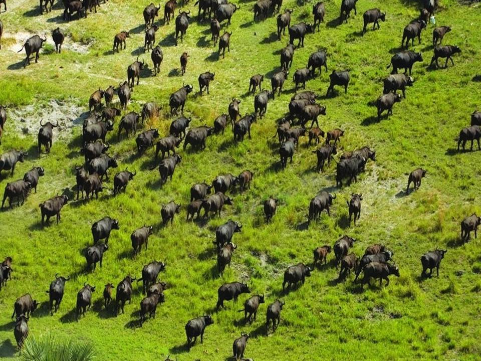
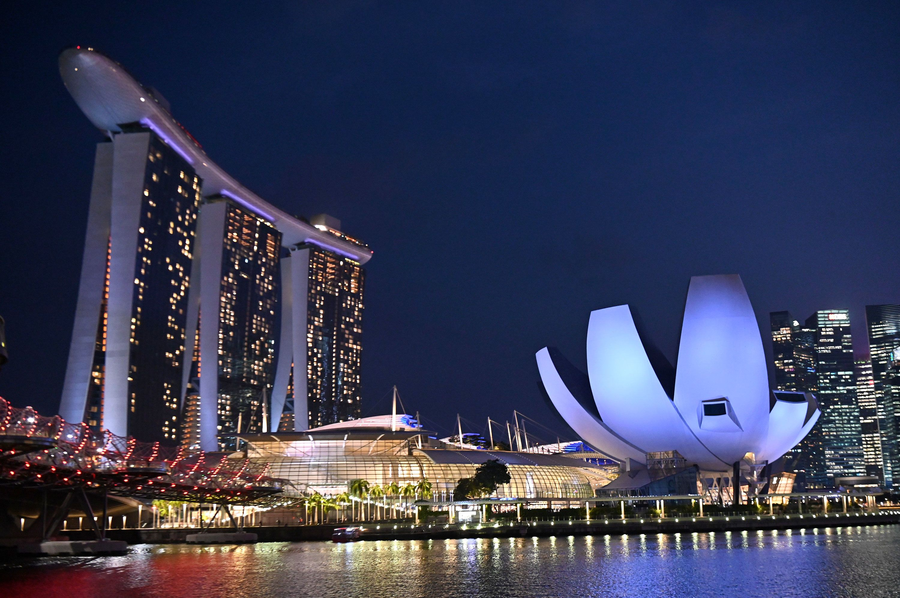
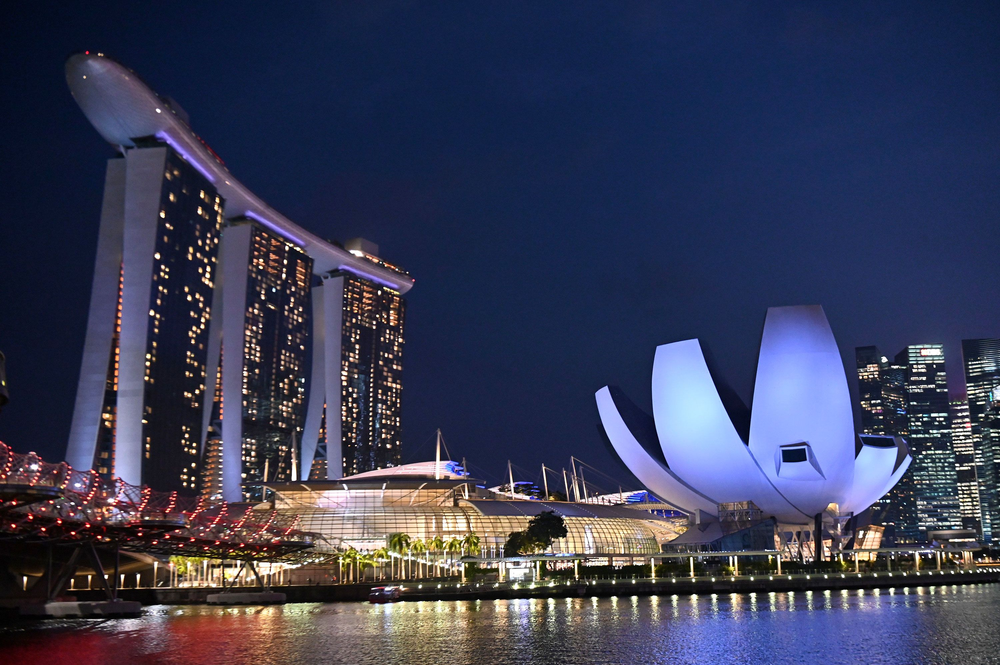

Singapore is a country located at the southern end of Malaysia. Despite the fact that Singapore is only 281.3 square miles and has a population of approximately 5.54 million, it has a thriving economy and is a strong player in the global market.
Singapore is famous for its city skyline, with a few landmarks such as the Marina Bay Sands Resort, Raffles Hotel, and the Esplanade. Additionally, Singapore has the highest rated airport in the world, with Changi Airport featuring many retail and dining options.
Photo Gallery
Hawker centres are a staple in singaporeans food culture. affordable food stalls run by elderly experienced cooks. You can find anything from any of the 4 main cultures in singapore (chinese, malay, indian and “western”)Changi airport is consistently ranked as the best airport in the world, for its cleanliness, efficiency and shopping/dining options. It’s main feat is Jewel’s water feature.These big gardens were built a few years ago and emphasise the idea that singapore is a “Garden City”. The trees light up at night and are a common location for photoshoots, night walks and weddings.Pulau Ubin is a nature reserve island off the coast of Singapore. It is a popular destination for a day filled with hiking, kayaking among mangroves, biking on nature trails, and observing wildlife like crocodiles, monkeys and wild boar.Sentosa is an island off the south coast of singapore. It hosts Universal Studios, casinos and beach resorts. It is Singapore’s vacation island. There are lots of white sandy beaches, hikes, beachfront restaurants and other attractions that are visited by tourists and locals alike
Okavango Delta, Botswana
Geographical Location: Africa
Even though diamonds are Botswana’s largest export, its true jewel is the wildlife in it. All the big five game animals are present in the Okavango Delta. It also holds one of the world’s largest animal populations, including elephants, lions, cheetahs, and more.
The Okavango Delta is in the middle of a desert, making it one of the few deltas that stand out from the other ~10000 deltas. Oil deposits were recently discovered in the rock in the Delta. This is a possible threat as extraction companies may pollute the water bodies, risking the lives of over 500 species of animals.
Photo Gallery

Seeing hundreds of buffalo together is a common migration sighting in the Okavango Delta.A herd of elephants walk through swampy ground of the Delta..A lioness with her three cubs covered in mud.A guide taking tourists through the river with both sides covered by lush grass in a canoe-shaped boat called a mokoro.Wild dogs, the most successful hunter of all wild animals, trekking through a river.
Sofia, Bulgaria
Geographical Location: Europe
Sofia is the capital city of Bulgaria, a country located in Eastern Europe. It is part of the European Union and the primary language spoken is Bulgarian. The city’s population is around 1.3 million. In addition to its urban structures, Sofia also contains a mountain peak called “Vitosha”.
Vitosha is located 30 minutes from the capital's center, and can be reached by foot, car, and by lift. The peak has an elevation of 7,520 feet and during the summer months the average temperature is around 64 degrees fahrenheit. This makes it a great sight for any type of traveler who seeks the outdoors.
Photo Gallery
Located in the city's center, St. Alexander Nevsky Cathedral displays some of Sofia's grand architectureVitosha boulevard is often packed with both locals and tourists and contains shops, restaurants, live music, and great viewsThe peak of Vitosha mountain offers a great view of Sofia from aboveA picturesque street giving insight into the locals' lives and the city's public transport tramsOne of Sofia's famous roads, this street is paved with an interesting material: yellow cobblestones. Being one of the first streets in the entire city, it was first paved in 1907 and continues to be maintained to this day
Mexico City, Mexico
Geographical Location: North America
Mexico City is the capital of Mexico. The city is full of Museums that vary from history, art,
and even the history of the Mexican coin. In 2020 the Mexico city total population. was about 9.2 million
The city is 571 miles squared
For tourists, there are places like an amusement park called Feria de Chapultepec and giant zoo Zoológico de Chapultepec that are a must visit. In the photo gallery there are also major attractions to visit.
Photo Gallery
Castillo de Chapultepec (Chapultepec Castle) is a castle that is located in Miguel
Hidalgo, Mexico City.
Angel de la independencia (Angel of Independence) is an important monument located in Cuauhtémoc, Mexico City.
Templo Mayor (Mayor Temple) is a museum that is built by the ruins of an ancient temple.
This is the tomb of Margarita Maza de Juarez who was the wife of Benito Juarez
(A historical president).
Estadio Azteca is the stadium where the national Mexican soccer team
plays and the team Club América.
 
